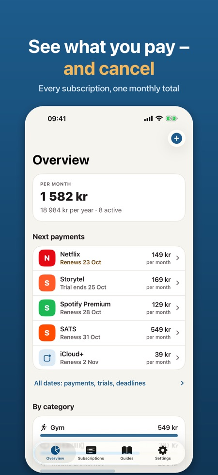
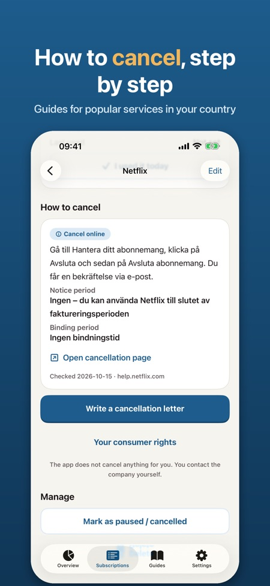
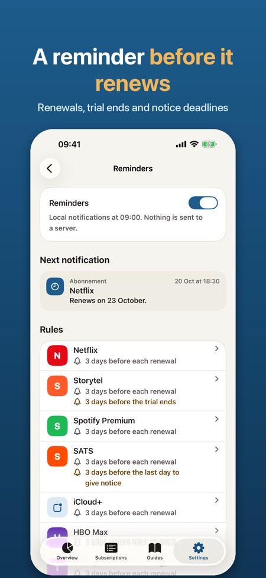

Abonnement shows what you pay every month, reminds you before each renewal or notice deadline, and helps you cancel with a ready-made letter. Everything stays on your iPhone.



It is made for Sweden, Norway, Denmark and Finland, with popular services from each country to pick from.
No. The app never cancels anything on your behalf. It gives you a guide with a direct link and a letter you send yourself.
No. There is no account and no bank login, and everything stays on your iPhone.
Your name, customer number and a request for written confirmation. You can share it by Mail or Messages, copy it or save it as a PDF.
Before every renewal up to 30 days ahead, before a trial becomes a paid subscription, before the last day to give notice and when a binding period ends.
Without Pro you can track up to 5 subscriptions. Pro adds unlimited subscriptions, cancellation letters, cost per category, the widget and CSV export.
You can choose a yearly subscription or a one-time purchase. The yearly plan starts with a 7-day trial.
Yes, a home screen and lock screen widget shows your monthly total and the next payment.
See every subscription you pay for, get a reminder before it renews, and find out how to cancel it.
MADE FOR SWEDEN, NORWAY, DENMARK AND FINLAND
Pick from popular services in your country: streaming, music, mobile, gyms, audiobooks and more. Billing cycle and how to cancel are filled in for you, or add your own.
SEE WHAT YOU PAY
• Total per month and per year
• Cost per category and your most expensive subscription
• Mark when you last used something and spot what you pay for without using
WHAT'S COMING UP
• Upcoming payments and dates to act on, 30 or 90 days ahead
• Statistics per month or per year, by category
• All cancellation guides in their own tab, and reminder settings in one place
REMINDERS ON TIME
• Before every renewal, up to 30 days ahead
• Before a trial turns into a paid subscription
• Before the last day to give notice, and when a binding period ends
CANCEL WITHOUT THE HASSLE
• Cancellation guides for each service and country, with a direct link, notice period, binding period and the date we last checked them
• A polite, clear cancellation letter in Swedish, Norwegian, Danish, Finnish or English with your name, customer number and a request for written confirmation. Share it by Mail or Messages, copy it or save it as a PDF; you send it yourself
• Short notes on your consumer rights in your country
HOME SCREEN AND LOCK SCREEN WIDGET
Your monthly total and the next payment at a glance.
PRIVATE BY DESIGN
No account, no bank login, no ads. Everything stays on your iPhone. Optional Face ID lock and CSV export.
PRO
Without Pro you can track up to 5 subscriptions with reminders and cancellation guides. Pro adds unlimited subscriptions, cancellation letters, cost per category, the widget and CSV export. Choose a yearly subscription or a one-time purchase. The yearly plan starts with a 7-day trial.
The app is independent and not affiliated with any of the services listed. Service names belong to their owners. Cancellation guides and rights notes are information, not legal advice. The app never cancels anything on your behalf.